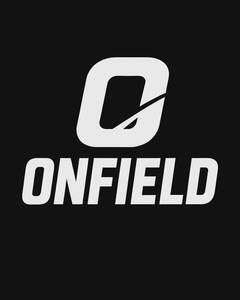

Trade Mark Journal No.2025/049 5 December 2025
UK00004289527 5 November 2025 (25)

- Class 25
- Clothing; Knitwear [clothing]; Jackets [clothing]; Ready-to-wear clothing; Woolen clothing; Furs [clothing]; Headbands [clothing]; Headbands for clothing; Gloves [clothing]; Clothes; Jerseys [clothing]; Shorts [clothing]; Parts of clothing, footwear and headgear; Knitted clothing; Windproof clothing; Hoods [clothing]; Embroidered clothing; Wristbands [clothing]; Rainproof clothing; Waterproof clothing; Casual clothing; Visors [clothing]; Jackets being sports clothing; Jackets (Stuff -) [clothing]; Bottoms [clothing]; Trunks being clothing; Drawers [clothing]; Clothing for sports; Sports clothing; Athletic clothing; Clothing for children; Weatherproof clothing; Water-resistant clothing; Beach clothing; Thermal clothing; Men's clothing; Mitts [clothing]; Hoodies; Sweatshirts; Hooded sweatshirts; T-shirts; Hooded sweat shirts; Shirts; Short-sleeved T-shirts; Turtleneck shirts; Hooded pullovers; Long-sleeved shirts; Beanies; Short-sleeve shirts; Camouflage shirts; Short-sleeved shirts; Tee-shirts; Fleece jackets; Corduroy shirts; Tracksuits; V-neck sweaters; Collared shirts; Shirts for suits; Sleeved jackets; Sleeveless jackets; Sweat shirts; Beanie hats; Sweaters; Sweatpants; Jackets; Open-necked shirts; Knit shirts; Fleece pullovers; Men's and women's jackets, coats, trousers, vests; Mock turtleneck shirts; Cardigans; Yoga shirts; Turtleneck pullovers; Denim jackets; Snowboard jackets; Turtleneck sweaters; Balaclavas; Sports shirts; Tank-tops; Camouflage jackets; Turtlenecks; Knit jackets; Pullovers; Sleeveless pullovers; Bandanas; Sport shirts; Printed t-shirts; Overshirts; Jumpers [pullovers]; Hooded tops; Fleece vests; Gilets; Tracksuit tops; Sports shirts with short sleeves; Golf shirts; Rugby shirts; Football shirts; Sports jackets; Tennis shirts; Tops [clothing]; Hats; Tracksuit bottoms; Windproof jackets; Under shirts; Jerseys; Wind-resistant jackets; Gym shorts; Gym suits; Volleyball shoes; Athletics shoes; Yoga shoes; Boxing shoes; Basketball shoes; Tennis shoes; Sports shoes; Jogging shoes; Basketball sneakers; Sport shoes; Footwear for women; Underwear for women; Rugby shoes; Sports pants; Tennis shorts; Tennis wear; Athletics footwear; Sports clothing [other than golf gloves]; Soccer shirts; Leisure shoes; Jogging outfits; Clothing for wear in wrestling games; Jogging pants; Aqua shoes; Footwear for men; Triathlon clothing; Gymwear; Footwear for sports; Sports footwear; Yoga pants; Clothing for men, women and children; Hiking shoes; Athletic tights; Sports bras; Men's underwear; Footwear for sport; Footwear for use in sport; Sportswear; Socks for men; Sports garments; Underclothing for women; Shoes for leisurewear; Swimwear; Loungewear; Casualwear; Sweat-absorbent underwear; Leisurewear; Sweat-absorbent underclothing [underwear]; Menswear; Clothing for leisure wear; Outerwear; Sneakers [footwear]; Surfwear; Casual footwear; Footwear; Sneakers; Denim jeans; Athletic footwear; Fashion hats; Beachwear; Clothing for cycling; Sportswear incorporating digital sensors; Leisure footwear; Clothes for sport; Clothes for sports; Golf footwear; Leisure clothing; Articles of sports clothing; Sports jerseys and breeches for sports; Sports wear; Sports jerseys; Sports vests; Sports bibs; Boots for sports; Moisture-wicking sports shirts; Sports socks; Golf clothing, other than gloves; Sports singlets; Sports headgear [other than helmets]; Moisture-wicking sports bras; Articles of clothing; Gloves as clothing; Sports over uniforms; Sports caps; Caps; Caps with visors; Caps [headwear]; Caps being headwear; Baseball caps; Peaked caps; Knitted caps; Baseball caps and hats; Sports caps and hats; Bucket caps; Flat caps; Golf caps; Cap visors; Cap peaks; Peaks (Cap -); Baseball hats; Visors [headwear]; Visors being headwear; Headwear; Peaked headwear; Sun visors [headwear]; Children's headwear; Headgear; Headgear for wear; Fascinator hats; Thermal headgear; Visors [hatmaking]; Hats (Paper -) [clothing]; Sun hats; Headbands.
NAKIS INVESTMENTS LTD